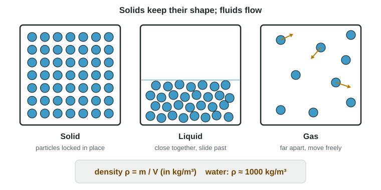

The last unit of the course is about fluids: water in a tank, air in a tire, blood in an artery. It was added to the course in 2024, and it is worth 10-15% of the exam, so it deserves real time. Everything in it builds on Newton's laws and energy, which you already know. This first page sets up the two ideas the rest of the unit uses: what a fluid is, and density.
Solids, liquids and gases
Matter is made of particles (atoms and molecules) that attract each other when they are close. How tightly they are held decides the state of matter:

- In a solid, each particle is held in a fixed position by its neighbors. It can vibrate, but it cannot wander. A solid keeps its own shape.
- In a liquid, the particles are still close together and touching, but they can slide past one another. A liquid takes the shape of its container and has a flat top surface.
- In a gas, the particles are far apart and move freely. A gas spreads out to fill its whole container.
Liquids and gases both flow, so both are called fluids. A fluid has no fixed shape of its own.
Density
A liter of water and a liter of air take up the same space, but the water has about 800 times as much mass. The quantity that captures this is density, the mass per unit volume:
ρ = m / V
The symbol ρ is the Greek letter rho. Do not confuse it with p (momentum) or P (pressure); readers report students mixing them up. The SI unit is kg/m³.
Density is a property of the material, not of the object. Cut a block of aluminum in half: each half has half the mass and half the volume, so the density is unchanged. That is why density can identify a material.
| Material | Density (kg/m³) |
|---|---|
| Air (room temperature) | 1.2 |
| Wood (pine) | about 500 |
| Fresh water | 1000 |
| Seawater | about 1025 |
| Aluminum | 2700 |
| Steel | about 7800 |
Worked example 1. A metal cylinder has a mass of 0.540 kg and a volume of 2.00 × 10⁻⁴ m³. What is its density, and what might it be made of?
ρ = m/V = 0.540 kg / 2.00 × 10⁻⁴ m³ = 2.70 × 10³ kg/m³, the density of aluminum.
Units: g/cm³ and kg/m³
Lab measurements often come in grams and cubic centimeters. Since 1 g = 10⁻³ kg and 1 cm³ = 10⁻⁶ m³,
1 g/cm³ = 10⁻³ kg / 10⁻⁶ m³ = 1000 kg/m³
Water's density is 1.00 g/cm³ = 1000 kg/m³. Convert to SI before you combine density with g or with a volume in m³.
Worked example 2. What is the mass of the air in a classroom 10 m × 8.0 m × 3.0 m? (ρair = 1.2 kg/m³)
V = 10 m × 8.0 m × 3.0 m = 240 m³; m = ρV = (1.2 kg/m³)(240 m³) = 290 kg. Air is light per cubic meter, but a room holds a lot of it.
The ideal fluid
Real fluids are complicated: gases compress, honey is sticky, and fast water swirls. The exam uses a simpler model, the ideal fluid, and so does this course:
- Incompressible: its density stays the same everywhere and at all times. Liquids come very close to this, because their particles are already touching.
- Nonviscous: there is no internal friction, so no energy is turned into thermal energy as it flows.
- Its flow is smooth and steady, with no swirls, and pipes are completely full.
Unless a question says otherwise, treat every fluid as ideal. Thick, sticky fluids and turbulent flow are beyond this course.